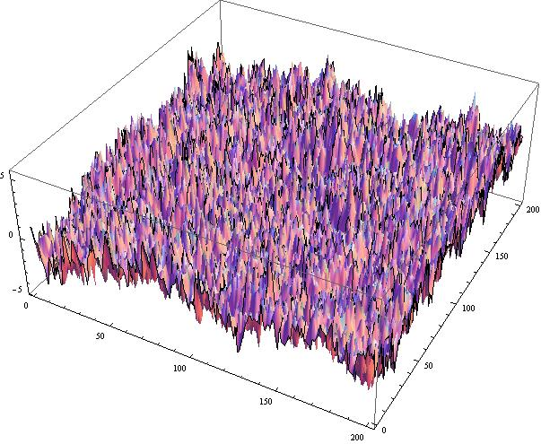

A realization of the discrete Gaussian free field on the 2D torus, an example of a stochastic process indexed by spatial coordinates. See code here.
Math 3170 - Elementary Stochastic Processes (Spring 2014)
TuTh 12:30-13:45, MSB 319
- Instructor: Joe P. Chen
- Contact: MSB 232, (first name).(middle initial).(last name)@uconn.edu
- Office Hours: Tuesdays 15:30-17:00 and Wednesdays 15:00-17:00. Other times by appointment.
- Syllabus and course schedule.
- Lecture notes, which will be updated as the class goes along.
- Topics to be covered in MATH 3170: (Discrete- and continuous-time) Markov chains; Poisson processes & renewal theory; martingales; Brownian motion; applications to mathematical finance (option pricing and the Black-Scholes formula).
- Required text: Essentials of Stochastic Processes (2nd ed.), by Rick Durrett. You can download a free copy of the beta version here, or buy a hard copy of the final version, for a fee, at the UConn Co-op. Here is a list of known typos in the beta version, courtesy of Cornellians. Do not use the 1st ed.!
- Prereqs: MATH 3160, STAT 3345, STAT 3375, or equivalent. I expect that you would be familiar with combinatorial probability, random variables (binomial, Poisson, normal, exponential), and conditional probabilities and expectations (though depending on your 3160 instructor, this last topic may or may not be treated in depth). These topics are covered in the first 7 chapters of Ross's A First Course in Probability, and are summarized in the Appendix of Durrett's text. If reading the Appendix does not give you a sense of déjà vu, then this course is not for you, with positive probability. Experience with linear algebra is a plus but not necessary. If you are unsure about your preparation, come talk to me.
- Course components: Weekly assignments (30%); two take-home midterm exams (40%); final exam (30%).
- Postscript (05/14/2014): End-of-semester course evaluations from my students. Scroll to last page for useful advice on taking this course.
This course will be modeled after prior versions of MATH 3170, taught by Rich Bass and Tom Laetsch. I will also take cues from the counterpart course at Cornell University, taught by Rick Durrett, Nate Eldredge, and most recently, Lionel Levine. You may see the Cornell MATH 4740 web page for a sense of the various topics discussed.
I will be using Piazza for all announcements, assignments, and course-related matters. Please read often!
Want to ask a HW/lecture question? Post your question on Piazza. By doing so you save me the trouble of having to answer the same question multiple times. Plus, once your question appears on Piazza, everyone can see and respond to it, and the whole class benefits. I will not respond to HW problems via e-mail.
Want to ask an individual question regarding course attendance, exam rescheduling, or other private matters? Then send me an e-mail.
Back to the UConn math department